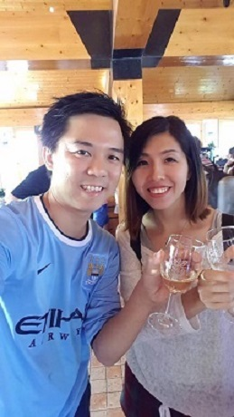

|  |
MY PHILOSOPHY - 语录篇26MAY2020 (Singapore Circuit Breaker)就是生长在悬崖峭壁中; 几经狂风， 寒冷，却依然朝着阳光茁壮成长的我。我是陈智民，来自马来西亚，目前在新加坡居住。不甘平平淡淡度过余生的我，却因为生活，暂时得在新国工作。记得周星驰在一部电影中说过：‘人，如果没有梦想，就如同一条咸鱼，没有差别！’。。。我，也有一个梦想，我的梦想就是创建一个网上服务平台，专为鱼夫，农民服务，让他们辛劳所得的成品，能得到更高的收益。马云曾经说：‘很多人是晚上想想千条路，早上起来走原路。’ 这句话，充分的道出了现实生活的无奈。白天努力的生存着。。。夜晚的空虚，来自于无限的想象空间，仿佛会有太多太多的可能性，却又被那白天的"虚假充实"给淹没了。挣扎! 徘徊。。。 再继续努力向上攀升吧!秉持坚韧不拔的信念，创造时机，向梦想出发！至：在奋斗中的自己。🌵🌱"Life's challenges are not supposed to paralyze you,they're supposed to help you discover who you are.” |
| Monday : | “Your Monday morning thoughts set the tone for your whole week. See yourself getting stronger, and living a fulfilling, happier & healthier life.” |
| Tuesday : | “The Pessimist Sees Difficulty In Every Opportunity. The Optimist Sees Opportunity In Every Difficulty.” |
| Wednesday : | “Be miserable. Or motivate yourself. Whatever has to be done, it's always your choice.” |
| Thursday : | “Life is full of beauty. Smell the rain, and feel the wind. Live your life to the fullest potential, and fight for your dreams.” |
| Friday : | “A ship is always safe at shore but that is not what it’s built for. Value your talent, Take the risk and move-on.” |
| Saturday : | “Don't let uncertainy stop you this Saturday. If you have a goal, take the action steps needed to move you forward.” |
| Sunday : | “Sunday. A day to refuel your soul and be grateful for your blessings. Take a deep breath and relax. Enjoy your family, your friends, and a cup of coffee.” |
肆意生长，热爱无休！
年轻人就应该先释放天性，把想表达的表达出来，做真实的自己，然后再做减法。热爱无休，其实是对实力的坚持和乐于其中。
正值青春，敢于追梦。热爱无休，不负时光。
没有一步登天的捷径，只有热枕之心，伴随我们同行。
因为热爱。。。所以肆意追逐，无畏无休！
正青春，不在乎年龄，不在乎外貌。。。而是心态，实力，才是长久发展的基础和基石。